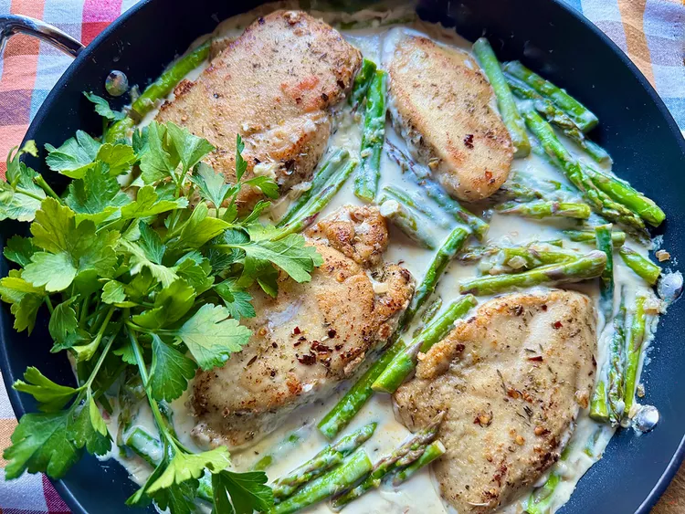

Creamy One-Pan Lemon Garlic Chicken and Asparagus

Description
This creamy one-pan lemon garlic chicken and asparagus comes together quickly enough for a weeknight, but it is special enough for guests. The creamy sauce makes it perfect to serve with fettuccine or rice; a tossed salad and some great bread are nice additions.
Ingredients
- 2 tablespoons all-purpose flour
- 2 teaspoons Italian herb seasoning
- 1/2 teaspoon red pepper flakes, or to taste
- 1/2 teaspoon salt
- 1/4 teaspoon freshly ground black pepper
- 1 1/2 pounds skinless, boneless chicken breast
- 2 tablespoons unsalted butter, divided
- 1 tablespoon olive oil
- 1/2 cup minced shallots
- 1 tablespoon minced garlic
- 1 pound fresh asparagus, trimmed and cut into thirds
- 1 cup heavy cream
- 1 lemon, juiced
- 1/4 cup grated pecorino Romano cheese
- Fresh flat-leaf parsley sprigs for garnish (optional)
Directions
-
In a 1-gallon resealable plastic bag, combine flour, Italian seasoning, red pepper, salt, and black pepper. Move ingredients around in the bag to mix well, and set aside.
-
Place chicken pieces between 2 sheets of plastic wrap on a cutting board. Pound the breasts to a uniform thickness of about 1/2-inch, and blot dry with paper towels.
- Add chicken pieces to flour mixture, seal the bag, and shake until all chicken is lightly coated.
-
Melt 1 tablespoon butter with olive oil in a large skillet over medium heat,. When butter stops sizzling and the pan is hot, carefully add chicken pieces. Lightly brown each side, cooking 4 to 5 minutes per side. Remove chicken to a plate and keep warm.
-
To the same skillet, with the drippings, add remaining tablespoon butter, shallots, and asparagus pieces. Cook, stirring often, about 3 minutes, or until asparagus is tender and bright green. Stir in garlic and cook until fragrant, about 30 seconds.
-
Stir in cream, lemon juice, and pecorino Romano cheese; stir until cheese is melted, about 1 minute. Nestle chicken back pieces into the pan and cook until sauce is thickened and chicken is heated through, about 3 minutes.
- Garnish with fresh flat leaf parsley, and serve warm.
Home